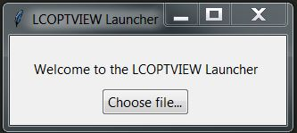

Installation and Use¶
Basic Installation¶
Recommended Installation¶
The easiest way to install lcoptview is via conda. This ensures the version of Python (3.6) is correct, all of the dependencies are correct and there are no conflicts.
If you have conda installed, you can do it in one command.
If you don’t, first install miniconda (available here)
Then, on the command line/console, create a new environment called lcoptview and install lcoptview with this command:
conda create -n lcoptview -c pjamesjoyce python=3.6 lcoptview
Launch lcoptview¶
Activate the lcoptview environment using one of these:
# Mac/Linux source activate lcoptview # Windows activate lcoptview
Launch lcoptview by typing:
lcoptview
You’ll see this dialog
Click on the button and choose an .lcoptview file.
Your default browser will open up, and you can explore the model and results.